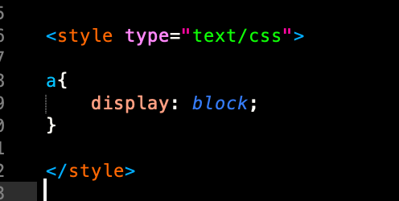

All websites start with an HTML file.
HTML stands for hypertext markup language. It is the skeleton of the world wide web! It's kind of like any text document, with it's own specific ruleset on how to lay things out and structure your web page.
The first HTML tag we have is called the head; This is basically where you give the browser a summary of what your web page is all about. You can add a title in for your page in the head, which will appear on the tab of your page.
Glitch is a tool because it gives you a template with everything you need for your webpage. All the important information you need is already in the head!
We can customize our webpage by adding styles, (CSS, Casading Style Sheet) and interaction (Javascript.)
CSS is like the skin of a website and Javascript is like it's muscles. I won't really be covering Javascript in this workshop, but feel free to use it on your own link tree if you're comfortable.
If we were building our site locally, we would link to the CSS file in the head and the Javascript file right before or after the body tag. The < body > tag contains the guts of our webpage <3
You don't even necessarily need to link to a separate document though! If you prefer you can write CSS styles inline or have a separate < style > tag that contains all the styles. I like to make a separate style sheet because it's just easier to look at. A note, the pictures I've included have the CSS wrapped in < style > because I chose to write them that way for the exercise. If you're linking a separate CSS file, you only need the code that starts with the tag and has curly brackets.
The Hyperlink
At the core of any link tree is, of course, the hyperlink.
The first website, created by Tim Berners-Lee in 1989 at CERN was just a list of hyperlinks!
On link trees, these links or buttons appear to be 3D squares, but we can use CSS to select the HTML elements and make them look any way we want, and we can even put them where we want on the page. There are a few different ways to do this.
The < a > tag is what makes the link clickable, and the href="" is an attribute that tells us the web address of where we are going. The a stands for "anchor"; When you click on it you'll be anchored on another page :_)
By default, these are blue, and underlined, but we can customize this using CSS. we can do this by selecting the a tag and changing it's color: and text-decoration:
& now we have a pink link !!
Changing the Colors of Elements
There are several ways to add colors to your page in CSS. We can denote color with hex values, rgba values(red, blue, green, alpha) and hsl values (hue, saturation, lightness. There is also a collection of color keywords, which can be found on mozilla's site.
I often use colordot to get specific hex colors.
"
Making Our Hyperlinks Look Like Buttons
To make our hyperlinks look like buttons, we're going to give our < a > tag a border: There are a few differnt border types you can choose from, including solid, dotted, and dashed To acheieve a more border-like look, we'll also give it a border-radius: . We can even change the < a > tag's background-color.
We'll also want to add some margins and padding, so that our text doesn't look cramped inside our boxes. The padding is the space around the element itself and the margin is the space between the element and other elements. We can think of it like a framed picture. The mat containing the image is the padding, and the frame is the margin.
We could also make these links look like buttons with this old school HTML tag, (< button >)
Similarly, you can select the button tag and style it however you want in CSS.
Hot Take on target="_blank"
It's possible that you might want to keep people on your page instead of sending them to an entirely new page. In this case, we can add target = "_blank " to our HTML tag.
Recently I read an article on css tricks about why using target blank wasn't a good idea because you are changing the default behavior when you could use the back button instead. Personally, I kind of like having a million tabs, and hate having to hit the back button, but this is totally up to you.
Getting More Specific with .class and #id
Perhaps we might want to make only some links pink, and the other ones green. We can do this a few different ways by being more specific in the way we write our HTML. We can do this by adding class="" or an id="" attributes to our < a > tag. It looks similar to an href=""
By adding a class, we can style multiple elements that belong to that same class in the same way.
Giving a tag an id is specific to only that one element, and can override anything in the class.
In CSS, we can select our class by typing a . followed by the name we gave it. We select an id by typing a # followed by the name we gave it.
Inline & Block Elements
We can think of HTML elements as different kinds of boxes that we stack inside of and on top of eachother.
Block elements, such as a div, by default take up the full width of the page with a size dictated by the content, where as inline elements for example a span, only takes up part of the width, and go with the flow of the page. Inline elements don't cause line breaks, where as block elements do. By default, text and images are inline, meaning if you add and image after some text in your HTML without a break, it will go with the flow of the text. We can change the default display of an element in our CSS. This might be a little confusing at first, but don't worry, it'll start to make sense.
This page is a good reference if you're not sure whether an HTML element is inline or block.
Our links by default are inline, but we're actually going to see what happens when we change them to be block elements. Each link will have it's own line! We can do that by saying:

Styling the Layout so that it's Responsive
We're going to want to put all of our links inside of a < div >
Then we'll want to center our links by giving the div a margin: of 0 auto;
The div is the box for our links, and margin: 0 auto; moves the content in the box to the center of the box with no margin on the top and bottom. The first value in the margin is the top and bottom, and the second value is left and right.
There is another way we can create the same effect on our links with flexbox.
Flexbox was added to CSS in 2013, and it's a pretty amazing tool for making the content on our pages responsive. Here is a complete guide to flexbox.
We'll want to give our div container a display:flex;
Then we'll want to specify the flex-direction: column; and justify-content: center; We want to set the align-items: stretch
Your css should looks something like this:
With this flexbox, we don't need to make our a tags display:block. We will still use margin: 0 auto; to center our links.
Adding Custom Fonts
We can add font files to our sites by using the @font-face rule. We'll add the font file to our assets folder in the same way that we would add an image.
velvetyne is a great place to find funky free fonts.
After we add a font to our page, we can select an HTML tag and give it a font-family:
This HTML element could be the body if you want the whole page to have the same font. You could also select tags invivdually like < h1 >, < p > , or < a > .
This is how I gave the headings on this webpage a custom cool font! I also specified a backup font called fantasy, in case certain browsers won't recognize my font. Fantasy is a generic font family already programmed into CSS.
Adding Images
To add an image in HTML, all you have to do is write:
It's an empty element, meaning it's self contained, you can't nest anything inside of it and you don't need to have a closing tag. and < input > are also empty elements.
In the quotes, you link to the image, so in our case we have a folder called assets that we can drop images into and then it gives us the option to copy that link and insert it in the quotes.
I usually just change the image width inside of the tag by adding width and the number of pixels, but you can specify in the CSS as well. You might not want to do it that way if your images are not all the same size. If you just put a width, it will determine the height automatically.
Don't Forget the Alt Text...
Inside our image elements, we need to add alt text so that they can be read by screen readers and are accessible to users who are low vision or blind.
This is an image description of my avatar on my link tree. It's nice to paint the pictures with words too.
Images are by default inline, and treated like text. We can easily center our image by putting it into a div and then saying:
For responsiveness, we want to set our image display: inline-block and max-width: 100%
This means that our image will resize it's self based on the browser size
Customizing Your Background
We can add a background color to our site by selecting the body tag in our css and adding a background-color:.
Adding a Background Image
We can add a background image like this:
If the image isn't large enough to cover the whole width of the screen, by default it will repeat. If you don't want this you can always change the repeat by saying:
Conversly, you could write background-repeat: repeat; if you're going for the checkered look. You can also adjust the width and height of the image. to change the size of these checkers.
We also might want to set the background size to cover, so it covers the whole height and width of our page.
Adding a Background Gradient
Gradients are really hot right now, and pretty simple to add as a background.
To add a gradient to our background we could just say:
There is a pretty good explanation of how to set up a gradient background on W3 Schools, but I like using this tool anytime I want to add a gradient. It's awesome because you can pick your colors and move their positions and the app generates the code for you. In this case I would just take the code and add it to my body selector in the CSS.
Hover Effects
Hover effects are totally sick my dudes \m/
They're simple interactions that we don't need javascript for. We'll add some hover effects to our links by selecting a:hover.
The sky is the limit with this! I'll show you how to add some blur on hover because I absolutely love the blur effect.
To add blur to our text when we hover on it will look something like this:
We'll set the color on hover to transparent, which will create a blurry, glassy look. Then we'll give our text a text-shadow:.
The first two values are the x & y offset, and the third value is the the blur radius, and the last value is the color.
You can find more info on text-shadow: here.
Here are some additional resources for cool things you can do in CSS:
CSS Transformations CSS Filters CSS Drop Shadow CSS Box Shadow